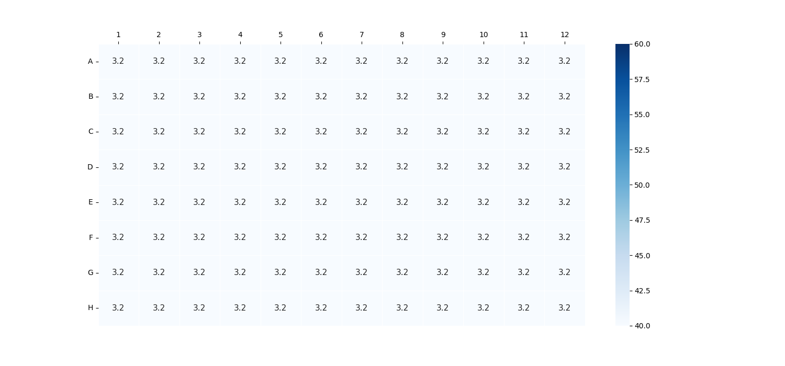

Tecan Spark Results
{{passfail}}
| Date Time: | {{date}} |
| Target Solution: | Fluorescence |
| Tecan Spark S/N | 2203010772 |
| Plate Name: | {{plate_name}} |
| Target Volume: | {{target_volume}} |
| Target Range: | {{target_range}} |
| Coefficient of Variation pass/fail limit: | 5% |
Plot for the Standards

Samples Data Analysis
| Average Volume | {{value1}} | Standard Deviation | {{value2}} |
| Coefficient of Variation (CV) | {{value3}} | Absolute Error | {{value8}} |
| Maximum Volume | {{value6}} | Minimum Volume | {{value5}} |
| Range | {{value7}} | Median Volume | {{value4}} |